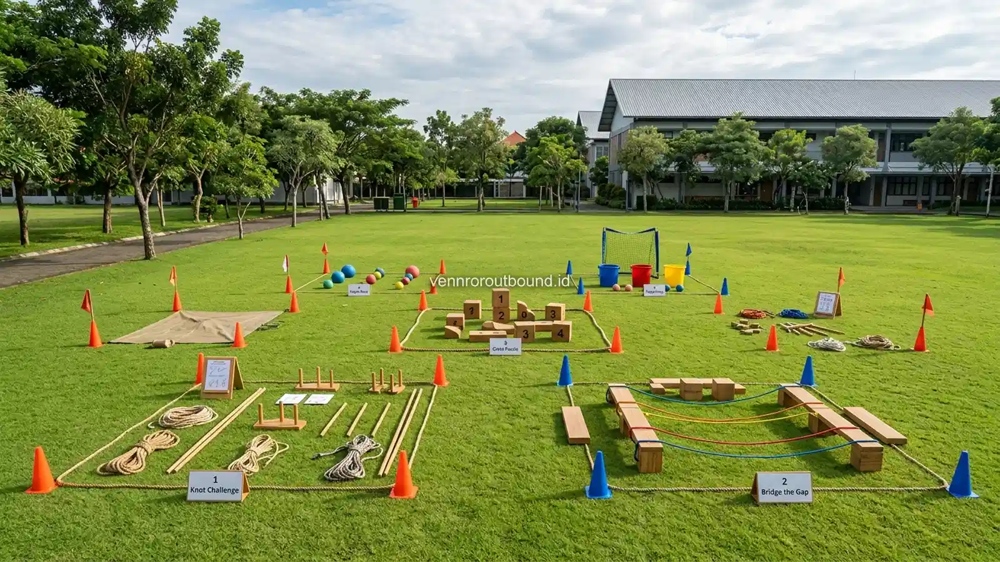

Apa Perbedaan MPLS Konvensional dan Outbound Edukasi?
MPLS konvensional dan outbound edukasi memiliki fungsi yang dapat saling melengkapi. MPLS konvensional efektif digunakan untuk menyampaikan informasi kurikulum, aturan tata tertib, fasilitas, dan orientasi sekolah, sedangkan outbound character building dapat menambahkan pengalaman interaktif melalui simulasi, komunikasi praktis, dan kerja kelompok. Pilihan metode sebaiknya disesuaikan dengan tujuan kegiatan, karakter siswa, waktu, lokasi, dan sumber daya sekolah.
Setiap tahun ajaran baru tiba, jajaran pimpinan sekolah, mulai dari Kepala Sekolah hingga Wakil Kepala Sekolah Bidang Kesiswaan, dihadapkan pada tugas strategis: merancang Masa Pengenalan Lingkungan Sekolah (MPLS) yang tidak hanya memenuhi regulasi kementerian pendidikan, tetapi juga mampu menanamkan fondasi nilai positif bagi siswa angkatan baru. Pertanyaan yang sering muncul adalah bagaimana menyeimbangkan antara penyampaian materi institusi dengan kebutuhan adaptasi sosial siswa yang cair.
Dalam praktiknya di dunia pendidikan Indonesia, terdapat dua spektrum pendekatan yang umum diaplikasikan. Pertama adalah MPLS dengan pendekatan konvensional yang dominan berbasis ruang kelas atau aula pertemuan terpusat. Kedua adalah pendekatan outbound edukasi berbasis character building yang memanfaatkan simulasi luar ruang dan prinsip experiential learning. Memahami secara jernih kelebihan dan batasan masing-masing metode membantu manajemen sekolah mengambil keputusan yang proporsional.
Karakteristik MPLS Konvensional
MPLS dengan pendekatan konvensional merupakan model orientasi klasik yang telah dijalankan selama beberapa dekade. Format ini menitikberatkan pada proses transfer pengetahuan dan pengenalan regulasi institusi dari pihak sekolah kepada peserta didik baru.
Beberapa karakteristik mendasar dari MPLS konvensional meliputi:
- Penyampaian Informasi Terstruktur: Guru dan narasumber menyampaikan materi mengenai visi misi sekolah, kurikulum merdeka, profil tenaga pendidik, sistem penilaian, serta tata tertib kedisiplinan dan sanksi secara detail melalui presentasi slide di proyektor.
- Orientasi Fisik Fasilitas: Peserta diajak berkeliling melihat laboratorium IPA, perpustakaan, ruang UKS, kantin sehat, lapangan olahraga, dan sarana ibadah dengan panduan pengurus OSIS.
- Komunikasi Satu Arah Dominan: Alur komunikasi umumnya bergerak dari pembicara di podium menuju ratusan siswa yang duduk tertib di aula atau bangku kelas, dengan sesi tanya jawab terbatas di akhir materi.
- Biaya dan Logistik Terkelola Rapi: Pendekatan ini relatif hemat biaya operasional karena memanfaatkan sarana fisik sekolah yang sudah tersedia tanpa membutuhkan banyak peralatan aktivitas tambahan di luar kelas.
Karakteristik Outbound Edukasi Character Building
Sebaliknya, pendekatan outbound edukasi bertumpu pada premis bahwa karakter, kepemimpinan, dan solidaritas tidak cukup hanya dihafal definisinya, melainkan harus dialami dan dirasakan dampaknya secara nyata. Pendekatan ini memindahkan laboratorium sosial ke alam terbuka atau lapangan terbuka sekolah.
Beberapa pilar utama yang membentuk karakteristik outbound character building meliputi:
- Metodologi Experiential Learning: Menggunakan siklus belajar melalui tindakan konkret, refleksi kritis terhadap pengalaman, konseptualisasi pelajaran moral, dan komitmen penerapan perilaku dalam kehidupan sekolah sehari-hari.
- Aktivitas Kelompok Terpadu: Siswa dikelompokkan secara heterogen melintasi perbedaan latar belakang, kemudian diberikan tantangan simulasi yang hanya bisa diselesaikan jika seluruh anggota berkolaborasi secara aktif.
- Komunikasi Multiarah yang Intensif: Peserta dituntut berbicara, mendengarkan saran kawan, bernegosiasi menentukan strategi, dan menyampaikan pendapat dalam suasana yang terbuka dan setara.
- Fasilitasi Reflektif (Debriefing): Di akhir setiap permainan simulasi, fasilitator memandu sesi dialog reflektif untuk menggali hikmah perilaku, seperti pentingnya kejujuran, sikap saling percaya, dan pengendalian emosi saat menghadapi kegagalan tim.
Penerapan modul terencana seperti pada Paket Character Building Sekolah membantu lembaga pendidikan menyelaraskan aktivitas fisik dengan penanaman profil pelajar Pancasila secara menyenangkan dan bermakna.
Tabel Perbandingan: MPLS Konvensional vs Outbound Edukasi
Berikut adalah matriks komparasi objektif antara kedua pendekatan orientasi sekolah:
| Aspek | MPLS Konvensional | Outbound Edukasi Character Building |
|---|---|---|
| Format Kegiatan | Ceramah, presentasi, dan orientasi ruang | Aktivitas fisik ringan, permainan, dan simulasi |
| Interaksi Antarsiswa | Tergantung metode dan kesempatan diskusi | Cenderung intensif berbasis dinamika kelompok |
| Aktivitas Fisik | Relatif terbatas pada posisi duduk | Dapat disesuaikan dengan kondisi dan stamina siswa |
| Penanaman Teamwork | Dapat disampaikan secara teori konseptual | Dapat disimulasikan melalui pemecahan masalah bersama |
| Problem Solving | Melalui materi penjelasan dan studi kasus tertulis | Dapat melalui permainan tantangan nyata di lapangan |
| Pola Komunikasi | Presentasi satu arah dan diskusi formal | Interaksi spontan, instruksi tim, dan dialog cair |
| Metode Refleksi | Tanya jawab singkat di akhir sesi seminar | Dapat dilakukan setelah aktivitas melalui debriefing |
| Fleksibilitas Desain | Tergantung susunan rundown kesiswaan | Dapat dikustomisasi sesuai profil dan target nilai sekolah |
| Fokus Utama Capaian | Orientasi informasi, regulasi, dan kurikulum | Pengalaman belajar, interaksi sosial, dan karakter |
Baca Juga:
Kapan MPLS Konvensional Lebih Sesuai?
Pendekatan konvensional tetap memiliki posisi yang tidak tergantikan dalam struktur orientasi pendidikan. Metode ini paling tepat diprioritaskan ketika:
- Sekolah Membutuhkan Penyampaian Informasi Formal Berskala Luas: Pengenalan kurikulum baru, peminatan mata pelajaran, jadwal ujian, serta tata tertib tertulis memerlukan paparan yang runut dan dokumentasi tertulis yang jelas bagi seluruh siswa dan orang tua.
- Fasilitas Terbuka atau Lapangan Terbatas: Jika sekolah berlokasi di area perkotaan padat dengan halaman luar yang minim atau tengah mengalami renovasi gedung, pemanfaatan auditorium tertutup ber-AC menjadi pilihan logis dan nyaman.
- Kondisi Cuaca Ekstrem: Pada musim hujan lebat atau angin kencang yang tidak memungkinkan aktivitas luar ruang, format seminar kelas memberikan perlindungan kenyamanan terbaik bagi fisik peserta.
Kapan Outbound Edukasi Dapat Dipertimbangkan?
Di sisi lain, manajemen sekolah sangat disarankan mempertimbangkan pendekatan outbound edukasi apabila:

- Target Utama Adalah Meruntuhkan Kecanggungan Sosial: Jika pihak kesiswaan mengamati adanya kecenderungan polarisasi siswa berdasarkan asal sekolah lama atau kelompok bermain (geng), simulasi outbound secara efektif mengacak pergaulan dan membangun keakraban lintas latar belakang.
- Sekolah Ingin Menanamkan Budaya Kolaboratif: Menghadapi era pendidikan modern yang mengutamakan soft skills (4C: Critical Thinking, Creativity, Collaboration, Communication), outbound menjadi laboratorium empiris terbaik untuk melatih keterampilan tersebut.
- Menciptakan Kesan Pertama yang Menyenangkan: MPLS yang diisi dengan tawa, tantangan seru, dan kehangatan fasilitator akan menumbuhkan kesan psikologis yang positif bahwa sekolah baru adalah tempat yang menyenangkan untuk belajar.
Apakah Keduanya Bisa Digabungkan Secara Selaras?
Jawaban terbaik bagi institusi sekolah modern bukanlah memilih salah satu secara kaku, melainkan mengintegrasikan keduanya dalam formula komprehensif. Kombinasi yang lazim disebut "Hybrid MPLS" membagi alur orientasi menjadi fase kognitif di dalam ruangan dan fase afektif-psikomotorik di luar ruangan.
Melalui integrasi ini, siswa tetap memperoleh kejelasan informasi mengenai aturan akademik dari para guru di hari pertama dan kedua, kemudian menguji pemahaman karakter, kedisiplinan, dan kekompakan mereka melalui simulasi outbound edukasi di hari ketiga atau sesi penutupan.
Contoh Integrasi Rundown MPLS dan Character Building
Berikut adalah model struktur orientasi 3 hari yang menggabungkan kedua kekuatan metodologis secara proporsional:
- Hari ke-1 (Pondasi Institusional): Upacara pembukaan resmi, pengenalan profil pimpinan dan dewan guru, pemaparan kurikulum sekolah, pengenalan tata tertib, dan tur fasilitas sekolah (Format Konvensional).
- Hari ke-2 (Wawasan Kebangsaan & Budaya Sekolah): Materi bela negara, literasi digital dan bahaya perundungan (bullying) oleh narasumber BK, serta pengenalan kegiatan ekstrakurikuler sekolah.
- Hari ke-3 (Outbound Character Building & Pengukuhan): Sesi warming up massal, rotasi pos team building games, simulasi pemecahan masalah bersama, sesi refleksi komitmen siswa baru, dan inaugurasi angkatan (Format Outbound Edukasi).
Faktor yang Perlu Dipertimbangkan Sekolah
Sebelum memutuskan mengadopsi outbound edukasi ke dalam agenda MPLS, tim panitia dan kesiswaan perlu mempertimbangkan sejumlah faktor teknis:
1. Kapasitas dan Rasio Fasilitator: Menangani 200 hingga 500 siswa baru membutuhkan rasio pendamping yang memadai. Idealnya, setiap kelompok 15–20 siswa didampingi oleh 1 fasilitator terlatih agar dinamika kelompok dapat diamati dan diarahkan secara positif.
2. Protokol Keselamatan dan Mitigasi Cuaca: Seluruh area aktivitas harus bebas dari bahaya fisik. Pihak sekolah bersama penyedia jasa outbound perlu menyiapkan rencana kontingensi (Plan B), misalnya memindahkan stasiun permainan ke koridor atau aula jika hujan turun deras.
3. Inklusivitas dan Kondisi Kesehatan Siswa: Panitia wajib mendata riwayat kesehatan seluruh siswa baru sebelum kegiatan dimulai untuk memastikan siswa dengan riwayat asma, cedera tulang, atau kondisi khusus lainnya tetap dapat berpartisipasi dalam peran yang aman tanpa beban fisik.
Transformasi MPLS Sekolah Anda Menjadi Petualangan Edukatif
Rencanakan kombinasi materi orientasi kelas dan simulasi outbound character building yang bermakna bagi siswa baru. Diskusikan kapasitas dan rancangan program bersama tim kami melalui WhatsApp +62 82211221909.
Konsultasi Program via WhatsAppKesimpulan
Menimbang antara MPLS konvensional dan outbound edukasi bukanlah perdebatan mengenai siapa yang lebih unggul, melainkan tentang bagaimana menyelaraskan instrumen pendidikan dengan tujuan pembelajaran yang ingin dicapai. Sekolah yang bijak memandang keduanya sebagai dua sisi mata uang yang saling melengkapi.
Dengan memadukan ketertiban transfer informasi kelas dengan kehangatan interaksi di lapangan terbuka, masa orientasi sekolah dapat bertransformasi menjadi momen yang inspiratif. Siswa tidak hanya memahami aturan tertulis sekolah, tetapi juga merasakan secara mendalam kehangatan persaudaraan dan semangat pantang menyerah yang menjadi bekal penting dalam menempuh jenjang studi berikutnya.
Pertanyaan Sering Diajukan (FAQ)

Arby Ardiansyah
Arby Ardiansyah merupakan penulis konten yang membahas outbound, experiential learning, team building, family gathering, dan kegiatan pengembangan karakter untuk kebutuhan sekolah, keluarga, maupun perusahaan.